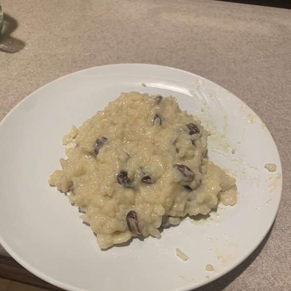

Sweet Rice

Description
Often called Arroz con Leche, this is a sweet custard-like pudding.
I haven't had a single person not love this traditional Mexican
rice pudding. You might want to double the recipe!
Ingredients
- 1 cup uncooked long-grain white rice
- 2 tablespoons unsalted butter
- 2 cups water
- 2 cups whole milk
- 1 tablespoon all-purpose flour
- ⅓ cup white sugar
- 1 egg
- 1 ½ teaspoons vanilla extract
- 1 cup whole milk
- ⅔ cup heavy cream
- ½ cup raisins (Optional)
- ½ teaspoon ground cinnamon
Steps
- Bring the rice, butter, and water to a boil in a large saucepan
over high heat. Reduce heat to medium-low, cover, and simmer
until the rice is tender, and the liquid has been absorbed, 20 to 25 minutes.
- Whisk together 2 cups of milk, flour, sugar, egg, and vanilla extract
in a bowl, and pour the milk mixture over the cooked rice. Stir to combine,
and simmer over low heat for 15 minutes. Stir in 1 cup whole milk, the cream,
raisins, and cinnamon until thoroughly mixed, and allow to cool for a few minutes.
Serve warm or cold.